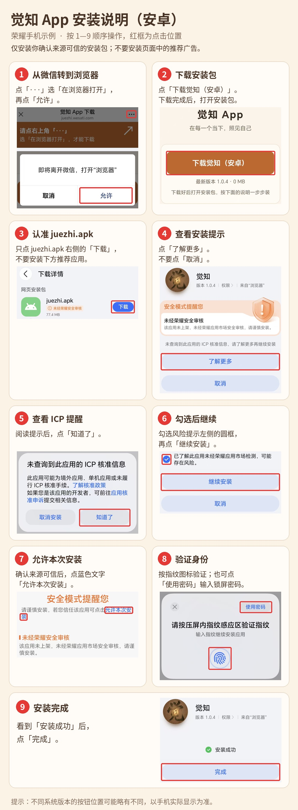

觉知 App / Awareness App
在每一个当下，照见自己
Mindfulness in every moment
下载好后打开安装包，按下面的说明一步步装
After download, follow the installation guide below
已经装过觉知的，直接覆盖安装，记录都会保留。
If you've installed before, just update — your data will be kept.
出现「风险」「未经安全审核」等提示是正常的，放心安装。
"Risk" or "Unverified" warnings are normal. Install safely.
目前只有安卓版，苹果手机暂时不能用。
Android only. Not available on iPhone.
安装说明 / Installation Guide
- 从微信转浏览器：点右上角「···」→「在浏览器打开」
From WeChat: tap "⋯" → Open in Browser - 下载安装包：点上面的下载按钮
Download: tap the download button above - 认准文件名：juezhi.apk
Confirm file name: juezhi.apk - 打开文件：点通知栏的下载完成提示
Open file: tap the download notification - 「了解更多」→「知道了」
"Learn more" → "Got it" - 勾选「知道风险，仍要安装」→「继续安装」
Check "Install anyway" → "Continue" - 「允许本次安装」
"Allow this installation" - 指纹或密码验证身份
Verify with fingerprint or password - 完成！
Done!
